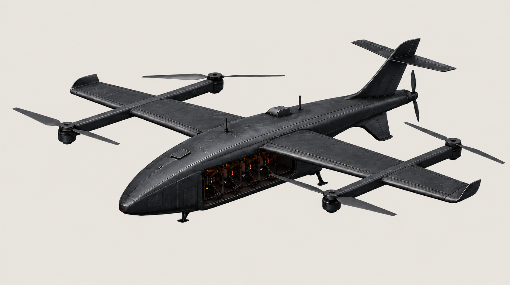

ThesisProductMissionContact
Advancing the frontline for allied forces.

Placeholder copy — not final. Expendable drones got cheap, but that didn't change the war. What actually decides an engagement is getting the right capability to the objective, again and again, without paying full price every single time. STRID One is a first answer to that problem.